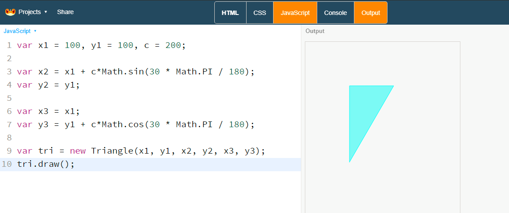
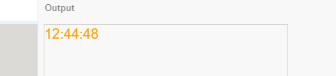

Learning Programing with LeapLearner (IV)¶
代码规范¶
语法基础I¶
本章节全面介绍 JavaScript 核心语法，从最简单的开始讲起，循序渐进、由浅入深，力求清晰易懂。
小知识：Atwood定律
程序员Jeff Atwood提出这么一条定律
所有可以用 JavaScript 编写的程序，最终都会出现 JavaScript 的版本。
(Any application that can be written in JavaScript will eventually be written in JavaScript.)
开发环境¶
JavaScript 的开发环境非常方便配置，只要电脑安装了浏览器，就相当于搭建了一个开发环境。从菜单中选择更多选项→开发者工具，就可以在它的控制台运行 JavaScript 代码。
进入控制台以后，就可以在提示符后输入代码，然后按Enter键，代码就会执行。如果按Shift + Enter键，则是换行，不会触发执行。建议阅读本章节时，使用控制台来进行说明。
将下面的程序复制到“控制台”，按下回车后，就可以看到运行结果。
function welcome(name) {
console.log('Hello ' + name);
}
welcome('Vic')
// => Hello Vic
数据类型¶
JavaScript 语言的每一个值，都属于某一种数据类型。JavaScript 的数据类型，共有六种。
- Number: 数值
- String: 字符串
- Boolean: 布尔值
- undefined: 表示未定义或者不存在
- null: 表示空值
- Object: 对象
通常，我们将数值、字符串、布尔值成为原始类型，它们无法再进行分割了。而对象往往是由多个原始类型的值组成的，可以看作是一个存放各种值的容器。至于undefined和null，一般将它们当作是两个特殊的值。
对象又可以分成三个子类型
- Object: 狭义的对象
- Array: 数组
- Function: 函数
这里需要明确的是，JavaScript的所有数据，都可以视为广义的对象。不仅数组和函数属于对象，就连原始类型的数据（数值、字符串、布尔值）也可以用对象方式调用。为了避免混淆，此后除非特别声明，本教程的”对象“都特指狭义的对象。
狭义的对象和数组是两种不同的数据组合方式，而函数其实是处理数据的方法。JavaScript把函数当成一种数据类型，可以像其他类型的数据一样，进行赋值和传递，这为编程带来了很大的灵活性，体现了JavaScript作为“函数式语言”的本质。
数值¶
和很多编程语言不同的是，JavaScript的数值只有一种类型，没有区分整数、浮点数等类型。
以下值都是数值
- 0, 1, 2, 3, ...
- 100, 230, 8888, ...
- 3.14, 0.01, 3.33333, ...
- -1, -3.14, ...
数值可以在JavaScript中直接进行运算，在计算机中，没有乘号和除号，一般用*来代表x号，用/来代表÷ 。
1 + 2
// => 3
6 * 4 + 2
// => 26
20 / 10
// => 2
在Console中执行运算时，直接输入Enter键就可以得到结果了，而不需要输入=号，如果不小心输入了=号，反而是得不到结果的。
数值的进制¶
使用字面量（literal）时，JavaScript 对整数提供四种进制的表示方法：十进制、十六进制、八进制、2进制。
- 十进制
- 八进制：有前缀
0o或0O的数值，或者有前导0、且只用到0-7的八个阿拉伯数字的数值。 - 十六进制：有前缀
0x或0X的数值。 - 二进制：有前缀
0b或0B的数值。
小数¶
在JavaScript内部，所有数字都是以64位浮点数的形式储存，即时是整数也是如此。所有1和1.0是相同的。
在进行小数的运算和比较时要十分小心。这是因为计算机为了同有限的位数表示更多的数字，从而将小数转成非常接近的浮点数，浮点数并不是一个非常精确的值。
0.1 + 0.2
// => 0.30000000000000004
字符串¶
字符串是由0个或者多个排在一起的字符，放在单引号或双引号之中。
'hi'
"Hello"
字符串默认只能写在同一行，如果必须分成多行，可以在每一行的末尾使用反斜杠\
'a very \
very \
long strory'
单引号字符串的内部，可以使用双引号。双引号字符串的内部，可以使用单引号。利用这个规则，我们可以合理的在字符串中使用双引号或者单引号。
'This is "A"'
"I'm vic"
当然，如果非要在字符串里同时使用单引号和双引号，可以用\来转义
'She said \"Hello\, I\'m Monica\"'
转义¶
反斜杠（\）在字符串内有特殊含义，用来表示一些特殊字符，所以又称为转义符。
需要用反斜杠转义的特殊字符，主要有下面这些：
\0null（\u0000）\b后退键（\u0008）\f换页符（\u000C）\n换行符（\u000A）\r回车键（\u000D）\t制表符（\u0009）\v垂直制表符（\u000B）\'单引号（\u0027）\"双引号（\u0022）- \ 反斜杠（\u005C）
字符串与数组¶
字符串可以被视为字符数组，因此可以使用数组的方括号运算符，用来返回某个位置的字符（位置编号从0开始）。
var s = 'hello';
s[0] // => "h"
s[1] // => "e"
s[4] // => "o"
'hello'[1] // => "e"
但是，字符串与数组的相似性仅此而已。实际上，无法改变字符串之中的单个字符。
var s = 'hello';
delete s[0];
s // "hello"
s[1] = 'a';
s // "hello"
s[5] = '!';
s // "hello"
length属性¶
length属性返回字符串的长度，该属性也是无法改变的。
var s = 'hello';
s.length // 5
s.length = 3;
s.length // 5
s.length = 7;
s.length // 5
布尔值¶
布尔值只有2个值，true和false，分别代表真和假。在程序中一般和if一起使用，用于控制程序的走向。
if(true){
console.log("Hello!");
}
// => Hello!
if(false){
console.log("World");
}
// 没有任何结果
当然，以上2个程序没有任何实际用处，甚至你都会觉得多此一举。事实上，布尔值一般由运算产生，如下面这个例子，我们定义了一个函数rank来判断学生的成绩是不是合格。
实例：输出分数的结果¶
function rank(score){
if(score > 60)
console.log('Pass');
else
console.log('Fail!');
}
rank(70); // => Pass
rank(40); // => Fail!
在这里，通过一个>的运算，产生了一个布尔值。从而控制程序输出不一样的内容。
其他返回布尔值的运算符
- &&, ||
- !
- ===, !==, ==, !=
- <, >, <=, >=
所有JavaScript的对象都可以转换为布尔值，除了false以外，还有一些值会被当作是布尔值false。
- 0
- null
- false
- undefined
- NaN
- "" 以及 ''（空字符串）
除了以上几类值外，其他的值都会被看作是true。我们可以利用这个特性简化代码。
null和undefined¶
对于null和undefined，可以大致可以像下面这样理解。
null表示空值，即该处的值现在为空。调用函数时，某个参数未设置任何值，这时就可以传入null。比如，某个函数接受引擎抛出的错误作为参数，如果运行过程中未出错，那么这个参数就会传入null，表示未发生错误。
undefined表示“未定义”，如果声明了一个变量而未进行赋值，那么这个值就是undefined
注意，JavaScript的标识名区分大小写，所以undefined和null不同于Undefined和Null
注释¶
在JavaScript中，有两个常见的注释方式有两种，单行注释和多行注释。
单行注释¶
使用//来注释
// this is the fist style, only this line is affected by the comment
var rect = new Rectangle();
/* here is the second
and you can write as much lines as you want
*/
rect.draw();
良好的注释可以帮助理解代码，同时不会影响到代码的执行。
函数¶
函数是一段可以重复调用的代码块。函数还能接受输入的参数，不同的参数会返回不同的之。
声明¶
函数使用function来声明，function后面接的是函数名，函数名的命名规则和变量完全一致。函数名后面是一对圆括号，里面是传入的参数。在后面是函数体，用大括号包含起来。
function drawRect(x, y, w, h){
var rect = new Rectangle(x, y, w, h);
rect.draw();
}
上面的代码声明了一个drawRect函数，它含有4个参数。
另外一种声明方式是将一个匿名函数赋值给变量。
var drawRect = function(){x, y, w, h}{
var rect = new Rectangle(x, y, w, h);
rect.draw();
}
和变量一样，如果同一个函数名重复声明，后面的函数声明会覆盖前面的函数。
函数的作用域¶
作用域是指变量存在的范围。在函数内部声明的变量只能在函数中使用。在函数外生命的变量叫做全局变量，可以在函数内部读取。
字符串¶
字符串是将字符串在一起，用单引号或者双引号包围的一串字符。
var a = "abc";
var b = 'Hello, world!';
注意，即时是空的""或者''也是一个字符串。
转义¶
但遇到一些特殊字符时，我们需要用反斜杠\来输入他们。
动画基础¶
画布的清理¶
canvas有许多的方法，我们可以利用clear方法来清理画布上的图形，好让我们重新开始绘制图形。
实例：画布清理¶
第一步，让我们在画布上画上任意你想要花的图形。
var rect = new Rectangle(100, 100, 200, 100);
rect.draw();
第二步，使用clear方法
canvas.clear();
发生了什么，一切都消失了，我们将画布上的图形全部清理了。
看起来clear这个方法好像很奇怪，我们如果需要一个空白的画布，一开始我们不往上画不就可以了？但是，利用这个方法以及下面的间隔执行，是创建一切动画的基础。
间隔执行¶
setInterval是浏览器窗口自带的一个函数，接受1个函数名参数以及一个时间间隔参数。它可以在规定的时间间隔后执行函数，利用这一特性，我们可以定时绘制图形，从而达到让图形动起来的效果。
实例：间隔执行¶
var rect = new Rectangle(10, 10, 200, 100);
function loop(){
rect.x += 10;
rect.y += 10;
rect.draw();
}
setInterval(loop, 1000);
在这里，时间间隔的单位为毫秒ms，1s=1000ms。在上面的例子中，浏览器每过一秒就会调用loop一次。从而实现固定时间间隔执行代码。
小知识: window对象
setInterval是浏览器window对象的一个方法，完整的写法是window.setInterval。在使用时，可以省去前面的window对象而直接使用。
执行代码，我们可以看到每隔一秒，就会输出一个新的矩形，不停的重叠起来。如果，我们将原来的图形清除，是不是就会有一种图形动起来的感觉了！

实例：动画¶
在每次执行绘制前，清理掉屏幕。
var rect = new Rectangle(10, 10, 200, 100);
function loop(){
rect.x += 10;
rect.y += 10;
canvas.clear();
rect.draw();
}
setInterval(loop, 1000);
快看，矩形动起来了！利用setInterval这个强大的功能，我们就可以让画面动起来了。
小知识：时间的单位
我们知道1天=24个小时，1个小时=60分钟，1分钟=60秒。而在秒下面，还有更小的单位，毫秒和纳秒，1秒=1000毫秒，1毫秒=1000纳秒。 对计算机来说，1秒是非常长的时间，可以做多达十亿亿次以上的计算，因此在计算机的世界里，往往以毫秒(ms)作为时间的计量单位。
帧执行¶
requestAnimationFrame是浏览器用于刷新页面的一个接口，类似于setTimeout，主要用途是按帧对页面进行重绘。
设置这个API的目的是为了让各种网页动画效果（DOM动画、Canvas动画、SVG动画、WebGL动画）能够有一个统一的刷新机制，从而节省系统资源，提高系统性能，改善视觉效果。代码中使用这个API，就是告诉浏览器希望执行一个动画，让浏览器在下一个动画帧安排一次网页重绘。
requestAnimationFrame的优势，在于充分利用显示器的刷新机制，比较节省系统资源。显示器有固定的刷新频率（60Hz或75Hz），也就是说，每秒最多只能重绘60次或75次，requestAnimationFrame的基本思想就是与这个刷新频率保持同步，利用这个刷新频率进行页面重绘。此外，使用这个API，一旦页面不处于浏览器的当前标签，就会自动停止刷新。这就节省了CPU、GPU和电力。
requestAnimationFrame使用一个回调函数作为参数。这个回调函数会在浏览器重绘之前调用。
requestAnimationFrame(callback);
避免重复绘制
在实际使用中，往往有多种情况需要使用requestAnimationFrame，如果在同一帧中多次调用了requestAnimationFrame，有可能导致多次执行。表现出动画加速，达不到预期的要求。
实例：错误使用requestAnimationFrame导致动画加速。
在LLEG中，可以使用nextFrame函数，这个函数保证了在下一帧中仅有函数被调用
语法基础II¶
对象¶
对象是JavaScript的核心概念，也是最重要的数据类型。简单说，对象是一种无序的数据集合，由若干的键值对构成。
var vic = {
name: "Vic",
age: 18
}
上面的代码中，大括号就定义了一个对象vic，他有2个键值对，name和age是键名，"Vic"和28是对应键的值。
属性¶
对象的每一个键名又称之为属性，我们可以用以下方法来获取该属性对应的属性值。
vic.name // => "Vic"
还有一种是使用方括号运算符来读取属性值，使用方括号时，键名必须用字符串的形式。另外，数字键只能用方括号来读取，并且可以直接使用。
vic['name'] // => "Vic"
如果我们需要修改属性值，那么我们只要将重新给它赋值就可以了。
vic.name = "Tom";
方法¶
如果一个属性的值为函数，通常把这个属性称之为方法，它可以像函数那样调用。
语法进阶¶
面向对象编程是目前主流的编程范式。它将真实世界各种复杂的关系，抽象为一个个对象，然后由对象之间的分工与合作，完成对真实世界的模拟。
构造函数¶
构造函数和函数类型，使用function来定义。不一样的是，构造函数里使用了this来指代创建的实例。
function Human(name, age){
this.name = name;
this.age = age;
}
对象原型¶
每个构造函数都有一个prototype属性，这个属性就是实例对象的原型对象。
Human.prototype.sayHello = function(){
console.log("hello");
}
所有Human的实例便可以使用Human的原型函数了
创建实例¶
在使用实例前，我们需要创建一个实例。实例的创建
var vic = new Human("vic", 18);
使用new时，它做了以下事情
- 创建一个空对象，作为将要返回的对象实例
- 将这个空对象的模型，指向构造函数的prototype属性
- 将这个空对象复制给函数内部的this关键字
- 开始执行构造函数内部的代码
物理效果¶
移动¶
类似与坐标，我们可以将移动速度分解为2个方向，x和y轴上的速度。在每帧动画中，我们将图像的位置根据速度进行修正，就可以得到移动的效果。
速度的分解示意图
定义物体的速度
item.xspeed = 1;
item.yspeed = 2;
通过运动公式
距离 = 速度 x 时间
我们可以知道，下一次物体位置变化为
item.x = item.x + item.xspeed * t
item.y = item.y + item.yspeed * t
在实际应用时，因为每帧动画的时间间隔一致，所以我们可以将t直接计算进speed中，从而简化为
item.x = item.x + item.xspeed;
item.y = item.y + item.yspeed;
可以简写为
item.x += item.xspeed;
item.y += item.yspeed;
实例：移动的小球¶
var ball = new Circle(100, 100, 20);
ball.xspeed = 1;
ball.yspeed = 2;
ball.update = function(){
ball.x += ball.xspeed;
ball.y += ball.yspeed;
}
function main(){
canvas.clear();
ball.update();
ball.draw();
nextFrame(main);
}
main();
实例：移动的小球II¶
根据上面的例子，我们很快就可以写出让两个小球分布动起来的效果。
var ball1 = new Circle(100, 100, 20);
var ball2 = new Circle(100, 100, 20);
ball1.xspeed = 1;
ball1.yspeed = 2;
ball1.xspeed = 2;
ball1.yspeed = 1;
ball1.update = function(){
ball1.x += ball1.xspeed;
ball1.y += ball1.yspeed;
}
ball2.update = function(){
ball2.x += ball2.xspeed;
ball2.y += ball2.yspeed;
}
function main(){
canvas.clear();
ball1.update();
ball1.draw();
ball2.update();
ball2.draw();
nextFrame(main);
}
main();
但是，上面的代码有些地方重复了，因为我们写了两次的移动函数
ball1.update = function(){
ball1.x += ball1.xspeed;
ball1.y += ball1.yspeed;
}
ball2.update = function(){
ball2.x += ball2.xspeed;
ball2.y += ball2.yspeed;
}
而运动规则对这两个小球来说，应该是完全一致的，如果我们有3个、4个小球，那么他们的运行规则应该是一样的，那么我们能不能把这个规律总结出来呢。这时，就要引进一个非常重要的概念this。
this在JavaScript中代表了引用这个方法的主体，我们将上面的运动部分代码可以修改为：
ball1.update = function(){
this.x += this.xspeed;
this.y += this.yspeed;
}
ball2.update = function(){
this.x += this.xspeed;
this.y += this.yspeed;
}
可以发现，现在这两个方法是完全一模一样了。我们再将这个方法独立出来，命名为move，那么就可以写成下面的代码了。
var ball1 = new Circle(100, 100, 20);
var ball2 = new Circle(100, 100, 20);
ball1.xspeed = 1;
ball1.yspeed = 2;
ball1.xspeed = 2;
ball1.yspeed = 1;
function move(){
this.x += this.xspeed;
this.y += this.yspeed;
}
ball1.update = move;
ball2.update = move;
function main(){
canvas.clear();
ball1.update();
ball1.draw();
ball2.update();
ball2.draw();
nextFrame(main);
}
main();
经过抽象后，如果我们需要添加更多的小球，那么显然也是轻而易举的事情了。
反弹¶
在很多PC上都有经典的弹球游戏，小球在碰到边界后自动弹回。
实例：反弹的小球¶
首先，让我们用伪代码来实现这个过程
伪代码
如果（小球碰到了右边），让小球的x速度等于负数
如果（小球碰到了左边），让小球的x速度等于正数
如果（小球碰到了上边），让小球的y速度等于正数
如果（小球碰到了下边），让小球的y速度等于负数
在代码实现上，就很容易将以上伪代码转为Javascript代码
var item = new Circle(100, 100, 20);
item.xspeed = 1;
item.yspeed = 2;
item.update = function(){
this.x += this.xspeed;
this.y += this.yspeed;
if(this.x > canvas.width) this.xspeed = -1;
if(this.x < 0) this.xspeed = 1;
if(this.y > canvas.height) this.yspeed = -2;
if(this.y < 0) this.yspeed = 2;
};
function main(){
canvas.clear();
item.update();
item.draw();
requestAnimationFrame(main);
}
main();
碰撞¶
在这里，我们提供了一个方法collide，可以支持图形对象的检测判断。
实例：圆和矩形¶
var rect = new Rectangle(100, 100, 100, 100);
var circle = new Circle(100, 100, 30);
Mouse.move = function(){
circle.x = Mouse.x;
circle.y = Mouse.y;
};
(function main(){
canvas.clear();
rect.draw();
circle.draw();
var p = circle.collide(rect);
if(p){
new Point(p.x, p.y).draw();
}
nextFrame(main);
}());
实例：一群碰撞的圆¶
var r = 20;
var cs = [];
var count = 60;
function update(){
for(var i=0; i<count; i++){
c = cs[i];
if(c == this) continue;
var p = this.collide(c);
if(p){
if(p.x != this.x) this.x -= 5*Math.random()*(p.x - this.x)/Math.abs(p.x - this.x);
if(p.y != this.y) this.y -= 5*Math.random()*(p.y - this.y)/Math.abs(p.y - this.y);
}
if(this.x < r) this.x = r;
if(this.y < r) this.y = r;
if(this.x + r > canvas.width) this.x = canvas.width - r;
if(this.y + r > canvas.height) this.y = canvas.height - r;
}
}
for(var i=0; i<count; i++){
c = new Circle(200, 200+i, r);
c.update = update;
cs.push(c);
}
(function main(){
canvas.clear();
for(var i=0; i<cs.length; i++)
cs[i].update();
cs.draw();
nextFrame(main);
})();
重力效果¶
实例：重力小球¶
在地球上，重力无所不再，牛顿发现了其中的规律并总结为定律，后人称之为牛顿第二定律。 $$ s = s + v · dt \v = v + a · dt $$ 如果我们固定每次变化的间隔，那么公式可以简化为
yspeed = yspeed + g;
y = y + yspeed;
这就是重力公式在画布上的表示，我们可以写出以下代码来实现重力效果。
实例：一个颠球小游戏的实现¶
canvas.resize(300, 500);
var ball = new Circle(200, 200, 30);
var g = 0.5;
ball.yspeed = 0;
score = 0;
scoreMsg = new Text("0");
ball.click = function(){
this.yspeed = -20;
score++;
scoreMsg.src = score;
};
ball.update = function(){
this.yspeed += g;
this.y += this.yspeed;
if(this.y > 450) {
this.y = 450;
score = 0;
}
};
function loop(){
canvas.clear();
ball.update();
ball.draw();
scoreMsg.draw();
requestAnimationFrame(loop);
}
loop();
实例：Flappy Bird¶
var url = "http://llcs-1252287760.cossh.myqcloud.com/";
var sky = new Sprite(url+"bgs/bg.png", 0, 0, 800, 450);
var ground = new Sprite(url+"bgs/ground.png", 0, 430, 600, 150);
var bird = new Animation(url+"animations/bird.png", 80, 20, 56, 42);
bird.setFrame(0, 0, 112, 84, 8, 1); // shiftX, shiftY, frameX, frameY, columns, rows
bird.setAnchor(100, 0);
bird.scale(-1, 1); // These two lines are used to flip bird
bird.setCollisionScale(0.4, 0.4); // the actual collision scale
var spike1 = new Sprite(url+"images/spike3.png", 500, 300, 80, 170);
var spike2 = new Sprite(url+"images/spike3.png", 500, 0, 80, 170);
var bgm = new Audio();
bgm.src = url+"audio/bgm.mp3";
bgm.loop = true;
bgm.play();
var sound = new Audio();
sound.src = url+"audio/jump.mp3";
var collideSound = new Audio();
collideSound.src = url+"audio/collision.mp3";
var score = 0;
var hiscore = 0;
spike1.update = function(){
this.x += -6; // Moving speed
if(this.x + this.width < 0){ // If spike move out canvas
this.x = canvas.width;
this.y = 200 + 200 * Math.random(); // Spike in the buttom
score++;
}
};
spike2.update = function(){
this.x = spike1.x;
this.y = spike1.y - 360 + score*5; // Gap between spikes
};
bird.update = function(){
this.yspeed += 0.5; // Gravity
this.y += this.yspeed;
};
function moveAndDraw(speed){ // scene comes with same scene
this.translate(0, 0);
this.x -= speed;
if(this.x<-this.width) this.x = 0; // move out from canvas
this.draw();
this.translate(this.width, 0);
this.draw();
}
sky.moveAndDraw = moveAndDraw;
ground.moveAndDraw = moveAndDraw;
Mouse.down = function(){
if(isGameOver()){
GameStart();
}
else {
bird.yspeed = -10; // Bird jump speed
sound.currentTime = 0;
sound.play();
}
};
function GameStart(){
score = 0;
bird.y = 100;
bird.yspeed = -5;
spike1.x = 600;
spike2.x = 600;
bgm.play();
GameLoop();
}
function GameLoop(){
if(isGameOver()){
"Game Over TT".draw(110, 200);
"Try Again".draw(130, 240);
collideSound.play();
} else {
canvas.clear();
sky.moveAndDraw(2);
spike1.update();
spike2.update();
bird.update();
spike1.draw();
spike2.draw();
ground.moveAndDraw(6); // On top of spikes, keep same speed with spikes
bird.draw();
("score:" + score).draw(10, 30, "white");
if(hiscore < score) hiscore = score;
("HI:" + hiscore).draw(300, 30, "white");
nextFrame(GameLoop);
}
}
function isGameOver(){
if(bird.y + bird.height > ground.y) return true;
if(bird.y + bird.height < 0) return true;
if(bird.collide(spike1) || bird.collide(spike2))
return true;
return false;
}
loadRssAndRun(GameStart);
参考：库函数¶
Math¶
随机数¶
Math.random()
返回一个0到1的随机数，利用这个特性我们可以
注意：随机数的加法和乘法
Math.random() + Math.random() 能够生成 0-2的随机数字，但是结果并非均匀分布的，如果使用这种方式生成随机数，产生的结果会和你的预期可能会有较大出入。
同样，Math.random() * Math.random()的结果也非均匀分布的，在使用随机数的时候一定要注意这两点。
Math.floor()
实例：三角形¶
在画布上绘制出一个直角三角形，斜边长度是200，其中一个角是30°。
依据直角三角形的定理，我们可以知道
a = c * sin(30°)
b = c * cos(30°)
因此，我们假定直角定点是100, 100，那么其他两个顶点可以由此计算出来
var x1 = 100, y1 = 100, c = 200;
var x2 = x1 + c*Math.sin(30 * Math.PI / 180);
var y2 = y1;
var x3 = x1;
var y3 = y1 + c*Math.cos(30 * Math.PI / 180);
var tri = new Triangle(x1, y1, x2, y2, x3, y3);
tri.draw();
就得到我们想要的三角形了。

方法¶
| 方法 | 描述 | | ---------- | ---------------------------------------- | | abs(x) | 返回数的绝对值。 | | acos(x) | 返回数的反余弦值。 | | asin(x) | 返回数的反正弦值。 | | atan(x) | 以介于 -PI/2 与 PI/2 弧度之间的数值来返回 x 的反正切值。 | | atan2(y,x) | 返回从 x 轴到点 (x,y) 的角度（介于 -PI/2 与 PI/2 弧度之间）。 | | ceil(x) | 对数进行上舍入。 | | cos(x) | 返回数的余弦。 | | exp(x) | 返回 e 的指数。 | | floor(x) | 对数进行下舍入。 | | log(x) | 返回数的自然对数（底为e）。 | | max(x,y) | 返回 x 和 y 中的最高值。 | | min(x,y) | 返回 x 和 y 中的最低值。 | | pow(x,y) | 返回 x 的 y 次幂。 | | random() | 返回 0 ~ 1 之间的随机数。 | | round(x) | 把数四舍五入为最接近的整数。 | | sin(x) | 返回数的正弦。 | | sqrt(x) | 返回数的平方根。 | | tan(x) | 返回角的正切。 | | toSource() | 返回该对象的源代码。 | | valueOf() | 返回 Math 对象的原始值。 |
Date¶
Date 对象用于处理日期和时间。
可以通过 new 关键词来定义 Date 对象。以下代码定义了名为 date的 Date 对象：
var date =new Date()
注释：Date 对象自动使用当前的日期和时间作为其初始值。
| 方法 | 说明 |
| -------------- | ----------------------- |
| getHours() | 返回 Date 对象的小时 (0 ~ 23)。 |
| getMinutes() | 返回 Date 对象的分钟 (0 ~ 59)。 |
| getSeconds() | 返回 Date 对象的秒数 (0 ~ 59)。 |
实例：显示时间¶
var now = new Date();
var h = now.getHours();
var m = now.getMinutes();
var s = now.getSeconds();
var time = h + ":" + m + ":" + s;
time.draw();
每次运行时，都会依据你当前的时间来显示
